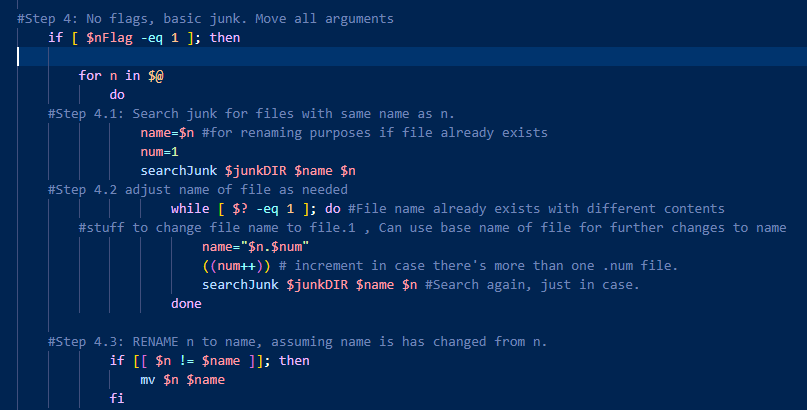
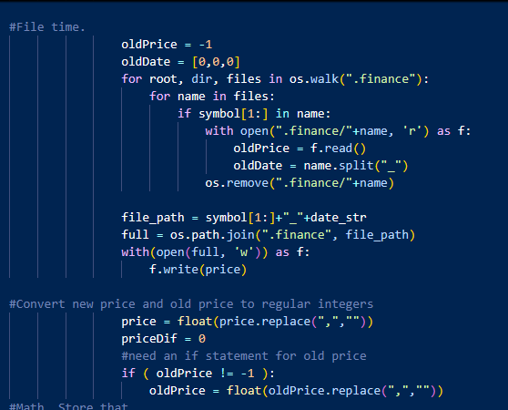
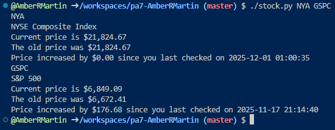

Bash Language

.junk - a folder created in the home directory of a user, acts as a recycle bin.
Skills Acquired: Better understanding of files and working in bash shell, a necessary skills for any programmer
Repository:
Bash
Thoughts: Turns out, I'm pretty good at bash!
I like working with shells in general, though, even if the syntax can get a bit confusing. Fortunately for me, I actually like learning new syntax! Most of the time.
Python and HTML


HTML Web Scraper - Simply pulls information from a website and neatly compiles it into a list, saving time and energy when looking for info
Skils Acquired - A thorough understanding of how HTML and Python coding language, as well as how webpages are created and formatted
Repository:
Web Scraping
Thoughts: I remember this assignment kind of...super....terrifying me. Turns out, actually, it's not so bad once you break it down.
It's just information at the end of the day and I REALLY like making lists of instructions.